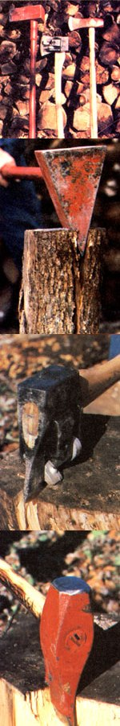

MOTHER's researchers compare the "Monster Maul", "Chopper 1", and a plain oil "go-devil" in ...
A while ago, two manufacturers sent us samples of their patented people-powered log splitters: the Monster Maul (available from Sotz Corporation, Dept. TMEN, 13602 Station Road, Columbia Station Ohio 44028) and Chopper 1 (available how Chopper Industries, Dept TMEN, P.O. Box 87, Easton, Pennsylvania 18042). The folks who make the two wood crackers suggested we try them out and see what we thought. Well, since we did have some chopping work to do somebody's got to cut the kindlin' for MOTHER's alcohol fuel still), we figured we'd see if the block busters were as good as they're claimed to be. And-just to make the comparison fair-we decided to rate the two new tools against an "ordinary" wood-splitting maul we picked up at a local hardware store.
We started the "Splittathon" by testing the 20-pound, hardened steel Monster Maul, and found that the tool clearly deserved its name. When the heavy implement-with its sharply angled (33°) wedge head-is dropped onto a billet, the firewood has just about no choice but to split asunder. It seemed to be unbreakable (no more ruined handles!), never stuck in a round, and divided even the knottiest pieces. However, the tool is heavy, and the average firewood cutter would feel more than a wee bit weal after a few hours of lifting and swinging a massive Monster Maui.
We next tested the innovative, seven-pound Chopper 1, and found that this log splitter is also a darn good tool. In fact, the outward pushing action of the head's built-in levers was so effective that both halves of a straight-grained block often flew 10 feet out from the chopping surface. (Let this be a warning to any curious onlookers!) Chopper 1 is balanced more like an axe than a maul, so it swings easily. And the splitter never-in our experience-buried itself in a billet ... but did bounce off any log that wouldn't pop apart.
The key, therefore, to this particular tool's success is its bite: "Chop" splits what it grabs. And the wood thwacker does sink its "sideways teeth" into large green-or dry-straight-grained pieces ... and some mid-sized misshapen billets, too. It won't, however, rip those especially cantankerous knotted rounds that are every woodchopper's bane.
The seven-pound "go-devil" proved (as thousands of homesteaders already know) to be quite adequate for most wood-block business. The hickory-handled tool can crack many a fair-sized round. However, it did fail to open overly knurly pieces. The farmer's maul has also been known to stick fast in the middle of a log and require the use of wedge and sledge for its retrieval.
The last judgment in our competition takes place not in the wood yard but in the wallet. The least expensive log splitter, not surprisingly, was the go-devil ... which cost us $15.95. The Monster Maul trailed behind at $27.95 delivered. (You can buy a lighter MM-with a 12-pound head-for $22.98 prepaid.) Chopper I was the most costly of the three at $34.95 delivered. (You can purchase the lever-action wood splitter with an unbreakable "Fiber-Core" handle-which would save writing off to Pennsylvania for wooden replacements-for an additional $2.50.)
So what's the verdict in MOTHERS Splittathon? Unfortunately (but realistically), there is no clearcut winner. No one wood splitter dominated every category. The Chopper 1-because it avoided sticking and "handled" well-is probably the most effective tool to use, it you split mostly strafe htg rained green wood ... but it is also the most expensive of the three. The Monster Maul-on the other hand-rules the field when it comes to tearing open Stubborn knotty logs...but its chief splitting asset-its weightcould become a liability to anyone who depended on it as his or her only splitting tool. And, of course, the standard go-devil works mighty fine on the "average" round and is the least expensive of all ... but will occasionally jam tight in a billet.
All three implements split wood a darn sight better than an ordinary axe, but each of the tools will suit a different need and different budget. So MOTHER's giving you the facts and the results of our comparisons. it's up to you to pick "the winner" for yourself.
|
 STAFF PHOTOS |
|
|